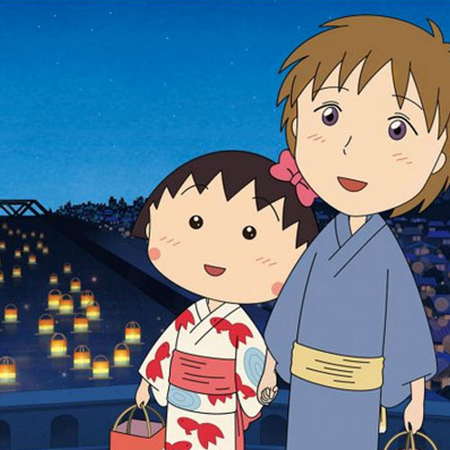

樱杏子
樱宏志
小林谨
樱友藏
樱小竹
出生在1965年05月08日的日本静冈县清水市，9岁，樱杏子的妹妹，小林谨和樱宏志的女儿，友藏和樱小竹的孙女，在生活和学习中与家人、朋友、老师、同学之间发生的一桩桩有趣的情景，有关于亲情、爱心以及同学之间的友情。
黑色的短头发的她，脸上有红红的腮红，喜欢穿白色的衬衫和红色的吊带裙，喜欢穿粉红色和红色的裙子或衣服，在出于餐厅、结婚典礼等场地，则会头发梳成丸子头。
